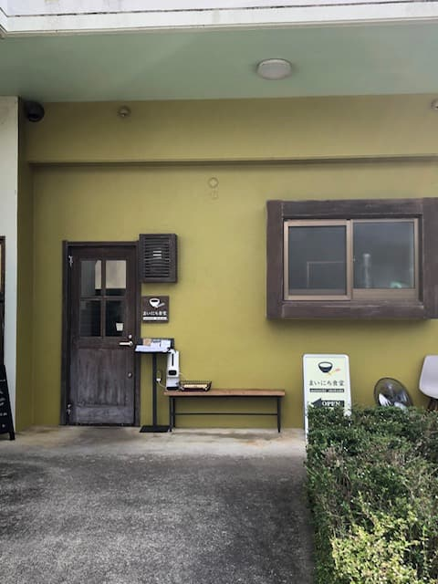
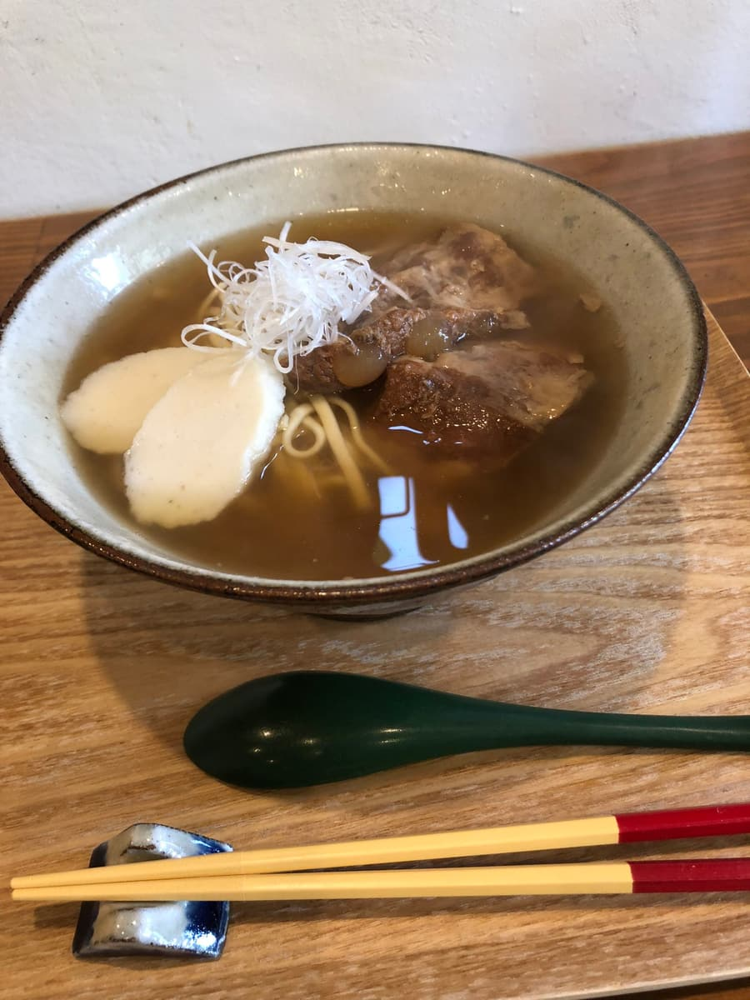

NHK 방송에서 소개되어 2022년 9월에 먹으러 갔습니다.


“연골 돼지갈비 소바”를 주문😄 가는 면 타입에 국물은 진한 가쓰오 베이스. 연골 돼지갈비도 녹아내리듯 맛있어요😋 후치바(쑥) 시치미는 쑥 풍미라 다른 가게에는 없어요.
평가(9점/15점): 보통으로 맛있었지만, NHK 방송에서는 코레구스(고추 아와모리)도 각자 전용으로 만들 수 있다는 식으로 말하고 있어서 다른 가게와는 다른 맛일까 싶었는데, 가게 안에 놓여 있던 것은 평소 코레구스와의 차이를 알 수 없었어요. 점심시간에는 줄이 생겨 있었으니 인기 가게네요😄
면: ★★★☆☆（3）
수프: ★★★☆☆（3）
토핑: ★★★☆☆（3）